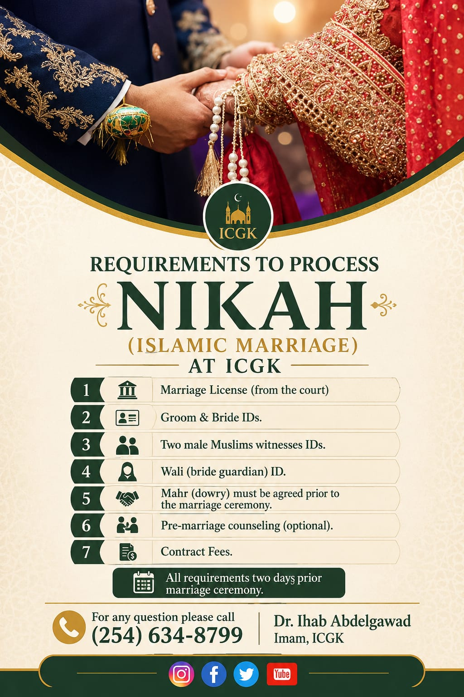

Marriage in Islam is a sacred covenant and half of one's faith. It is a source of love, mercy, and tranquility between spouses.
"And among His signs is that He created for you spouses… and placed between you love and mercy."— Qur'an 30:21
A walīmah (wedding feast) afterward is a Sunnah. ICGK offers nikāḥ and matrimonial services — see Programs.

Caring for the deceased is a communal obligation (farḍ kifāyah) and a final act of love. The process is dignified, simple, and swift.
"Hasten with the funeral…"— Sahih al-Bukhari
Mourning is dignified and patient: we say innā lillāhi wa innā ilayhi rājiʿūn ("to Allah we belong and to Him we return"). ICGK provides janāzah and burial assistance for families in need — please reach out right away in a time of loss.
The birth of a child is a blessing met with gratitude and Sunnah practices:
From joyful beginnings to times of grief, the masjid stands with you. ICGK offers nikāḥ services, janāzah and burial support, and guidance for welcoming a newborn — along with counseling for families.
For any of these services, or guidance on the proper steps, please reach out — especially in a bereavement, when we can help quickly.